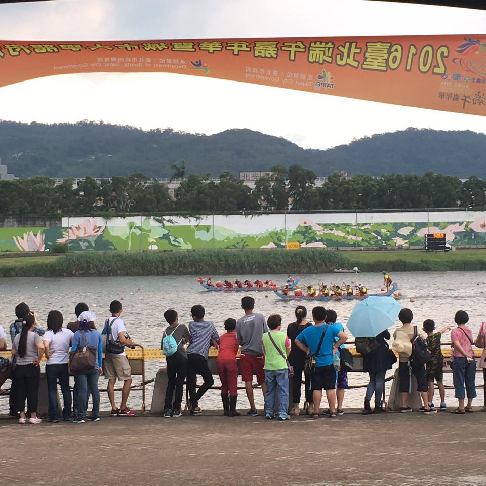
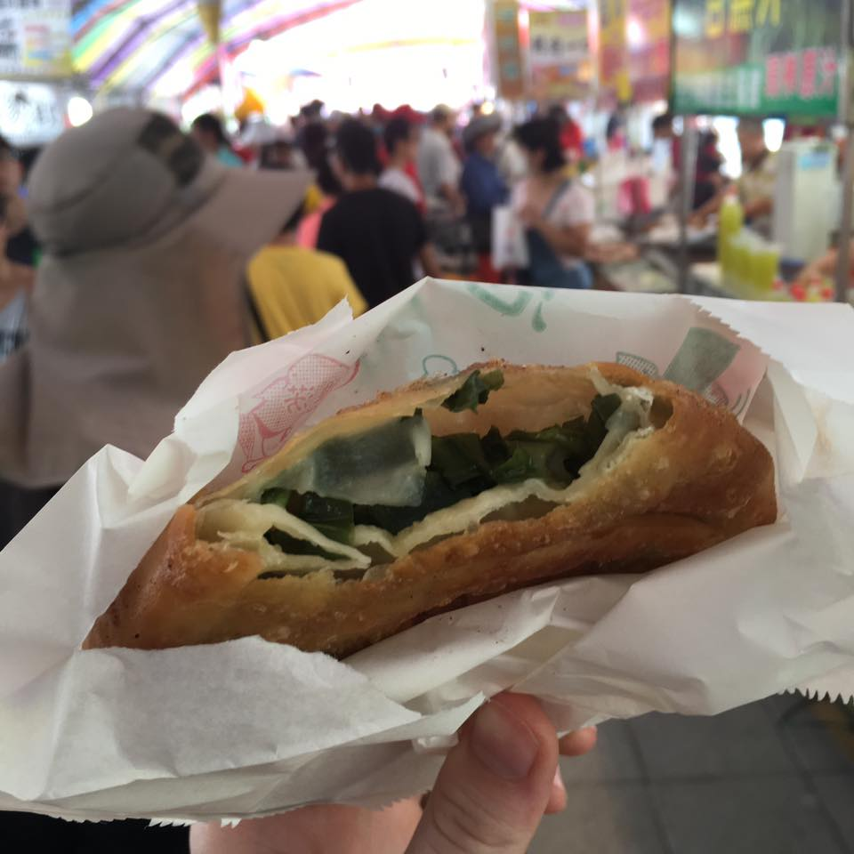
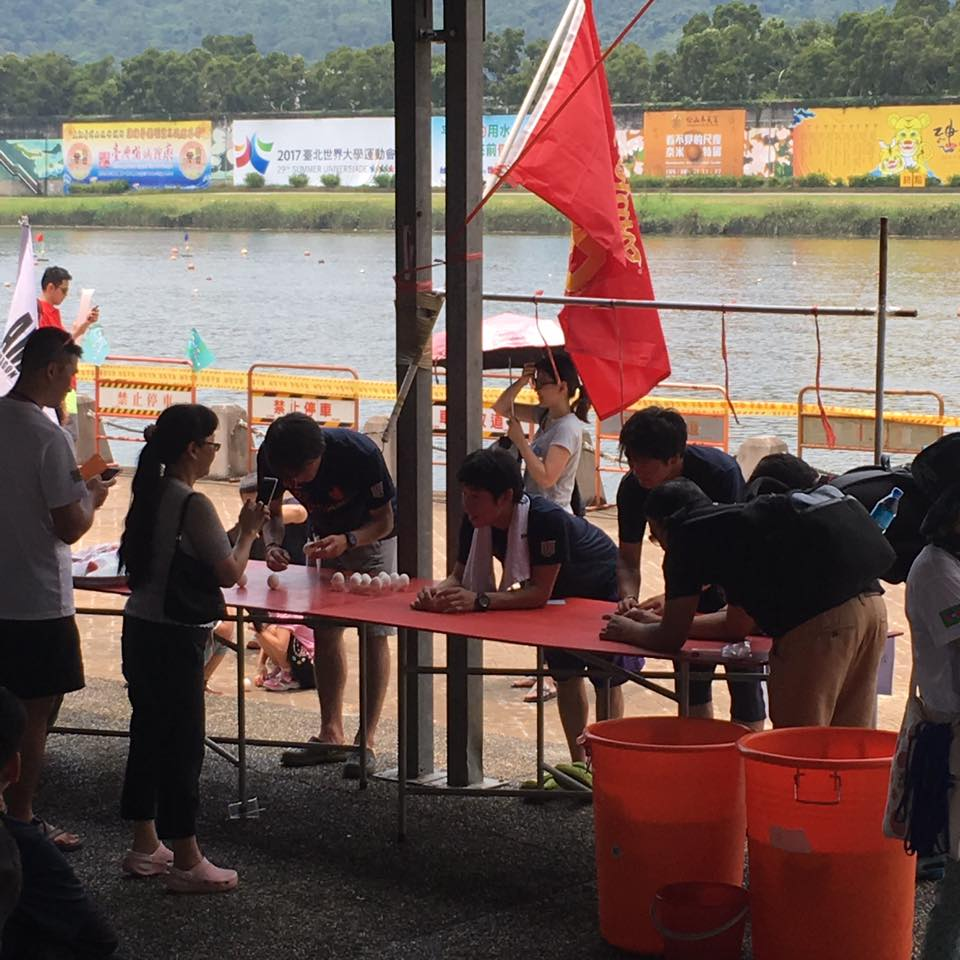
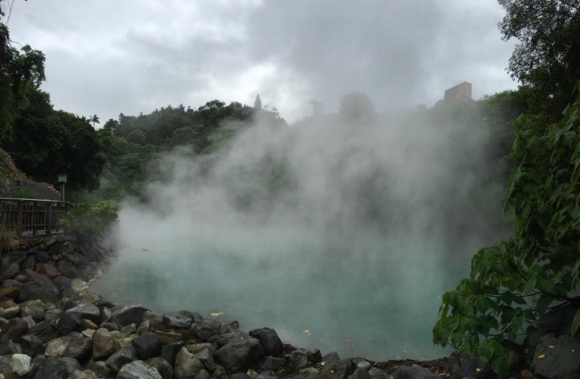
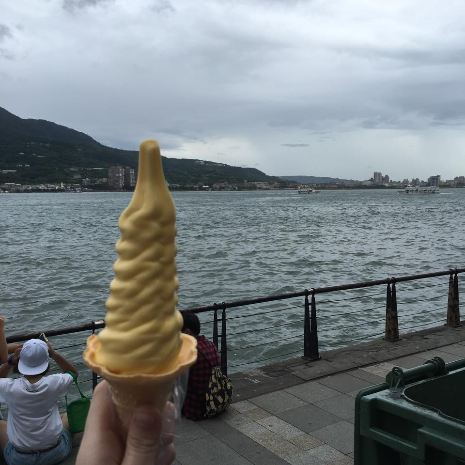
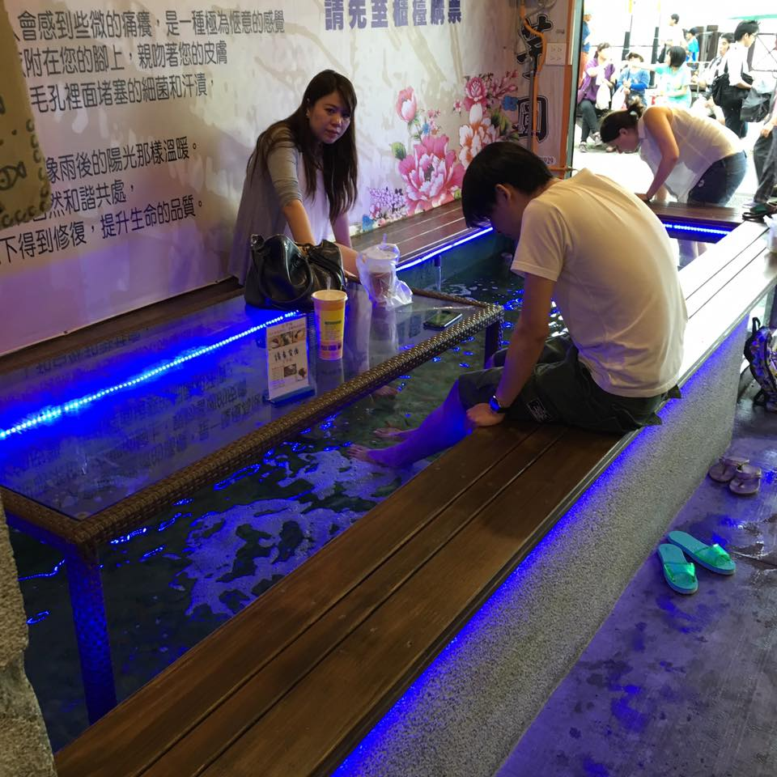
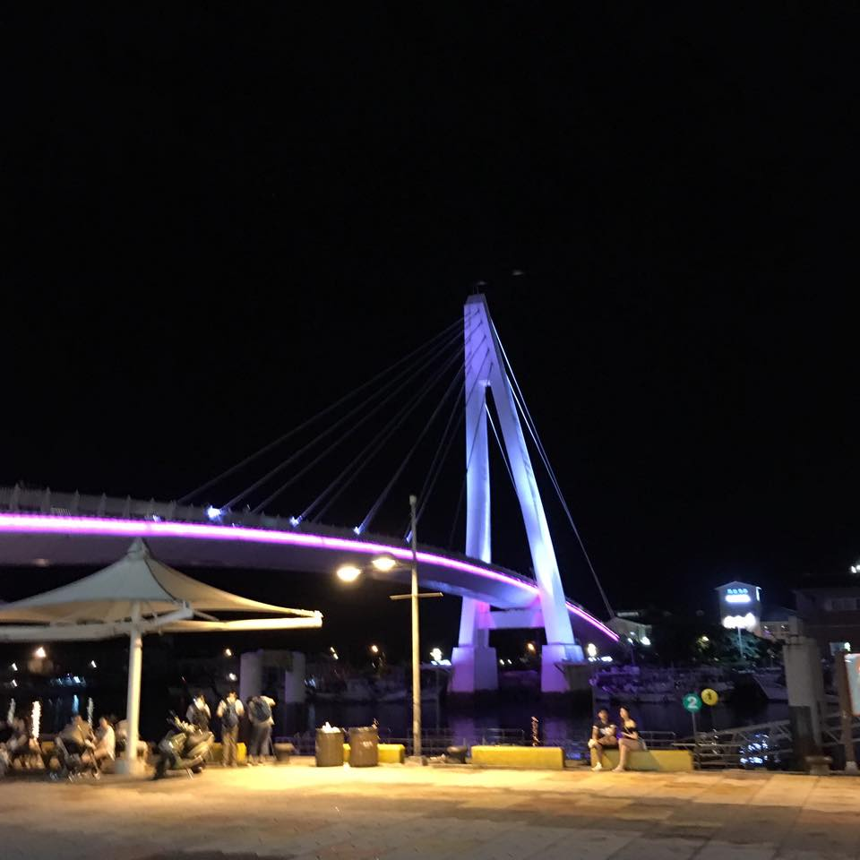
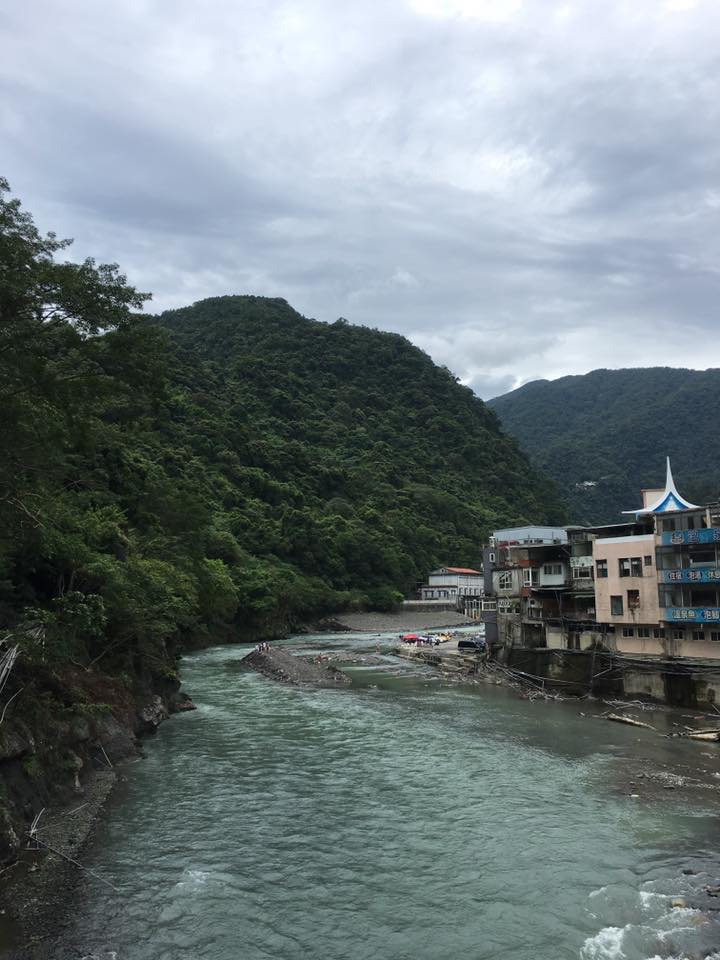
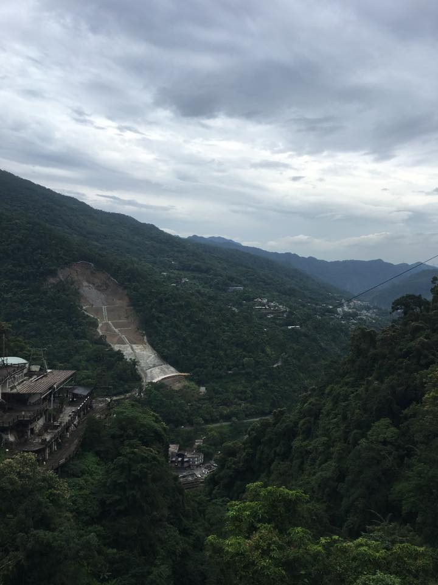
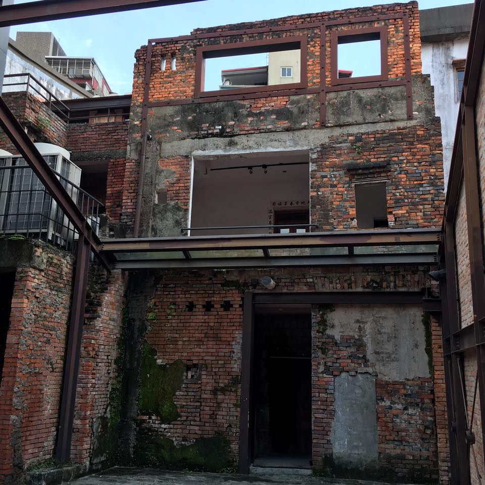

The past two weeks I've been busy, so I'm combining them into one post.
Dragon Boat Festival
Dragon Boat Festival was on June 9. We had the day off from class, so my roommate and I went to go see the dragon boat races. It was pretty fun to watch the teams. At one point some Taiwanese people started a USA chant, which was confusing because I didn't see a US team there, but of course I still joined in.
They also had a ton of food stalls. I'm convinced that the number of people at a place is directly proportional to how good the food tastes there.
At this table, if you balanced the egg on one end, you'd have good luck for the year. It was really difficult but I did it!
Beitou
Beitou is famous for its natural hot springs. However, as the weather was unbearably hot and humid, we didn't do any actual soaking. We visited some museums (they had us take our shoes off and wear slippers they provided), saw some of the hot springs, and ate food. Everything was really pretty there!
Tamsui
Tamsui is not too far from Beitou so we also checked it out. Tamsui is close to where a huge river goes out into the ocean so you can walk alongside it. There were tons of food stands.
The best part of Tamsui was going to a fish foot massage place. Basically you pay around $3 USD to stick your feet in a pool of water and then fish come and bite the dead skin off of your feet. It was ticklish at first but then it was extremely relaxing. I'm not sure how humane the situation is for the fish but for me it was great. (Actually now I'm Googling it and there are tons of warnings not go to to these places because they can easily spread disease and they're outlawed in several US states... Oops)
We also checked out the Fisherman's Wharf and ate food there. It's right on the ocean and has a bridge with lights that change colors if you're into that sort of thing.
Wulai
To get to Wulai we had to take a bus through the mountains with standing room only. It was basically a frightening complete full-body workout for the low price of a bus ticket. Once there, the scenery was amazing and the river was so blue!
We walked a very long distance to see a waterfall. We took a cable car up to the top of the waterfall and walked around. Unfortunately because of the crazy typhoons last year, most of the resort at the top was badly damaged and still hasn't been fixed. It was still definitely worth the trip and the view though!
Bopiliao Historical Block
I had an afternoon with no plans and no homework so I took a solo trip to see Bopiliao Historical Block. It's one of the oldest parts of Taipei and was actually pretty interesting. It was a lot smaller than I thought it would be but they had a museum I looked through.
Everyday Life
These past two weeks I've gotten even more comfortable here in Taipei. My Chinese has improved (and also my confidence while speaking) to the point of being able to talk to strangers (oftentimes about my height). I think others can sense that I'm a lot more comfortable here because these past two weeks I've had a lot more strangers talk to me. Sometimes on the metro if a little Taiwanese kid is staring at me I'll smile back at them and then their parents will tell them to tell me "Hello" and then we talk back and forth a little bit. Also, as time goes on, mosquito bites have been less and less itchy! :)
A link to my full album of Taiwan photos can be found here. Keep checking back for weekly updates!
Questions? Comments? Don't hesitate to contact me!